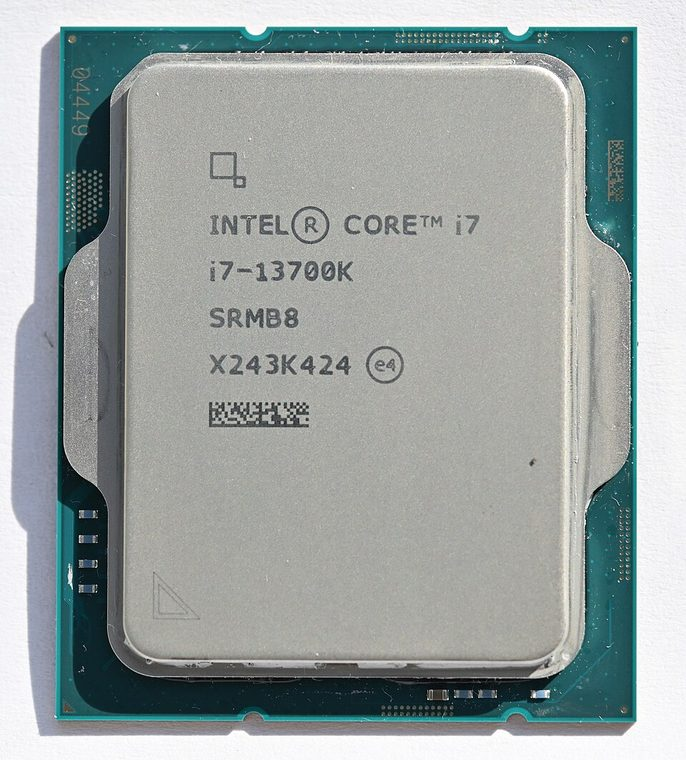

[ INTEL DESKTOP CPU // MODEL RECORD ]
Intel Core i7-13700K
Raptor Lake-S (13th-generation Core), Q4 2022; 16 cores (8 P-cores + 8 E-cores) / 24 threads; P-core base 3.40 GHz, max turbo 5.40 GHz; E-core base 2.50 GHz, max turbo 4.20 GHz; 30 MB Intel Smart Cache (L3); 125 W processor base power; 253 W maximum turbo power. Verify the physical model marking and platform support before installation.

MODEL IDENTIFICATION: Intel Core i7-13700K. Specifications refer to this SKU; related suffixes and revisions may differ.
Verified model specifications
| Catalog path | Intel → Core desktop generations |
|---|---|
| Model / generation | Raptor Lake-S (13th-generation Core), Q4 2022 |
| Core and frequency | 16 cores (8 P-cores + 8 E-cores) / 24 threads; P-core base 3.40 GHz, max turbo 5.40 GHz; E-core base 2.50 GHz, max turbo 4.20 GHz |
| Cache / processor power | 30 MB Intel Smart Cache (L3); 125 W processor base power; 253 W maximum turbo power |
| Package / socket | FCLGA1700 (LGA1700) |
| Memory | Dual-channel DDR4-3200 or DDR5-5600; motherboard selects one memory type |
| Integrated graphics | Intel UHD Graphics 770 |
Compatibility and service notes
- Use an LGA1700 motherboard whose CPU support list and BIOS cover the exact i7-13700K. 700-series boards are the launch-generation platform; many 600-series boards can run 13th-generation parts after a board-maker BIOS update. Confirm firmware, socket contacts, VRM/power limits, cooler capacity, and whether the board is DDR4 or DDR5 before service. K-series ratio overclocking requires compatible board firmware and additional cooling.
- The i7-13700K includes UHD Graphics 770; the i7-13700KF does not. Hybrid scheduling uses 8 P-cores and 8 E-cores; E-cores do not provide Hyper-Threading.
- Before installation, compare the full processor marking with the motherboard maker’s support list and minimum BIOS, then confirm cooler mounting, memory type, power delivery, and firmware settings. Socket fit alone does not establish compatibility; never force the package.
Service & archival record
Record the full model/ordering code and S-spec, stepping, board revision, BIOS/microcode, memory configuration, cooler, power profile, physical condition, provenance, and source revision. Separate measured behavior from published specifications.
Handle the package by its edges and protect socket contacts. Inspect for contamination, damaged pads/pins, and uneven cooler pressure before use.
Sources & further reading
- Intel ARK — Intel Core i7-13700K product specificationsIntel’s official product-specification lookup/page for the exact processor model.
- Intel — Desktop processor installation supportManufacturer guidance for installation and socket handling; use the motherboard maker’s exact CPU-support list for board and BIOS compatibility.
Verify board revision and firmware with its manufacturer; ARK specifications do not guarantee compatibility with every motherboard sharing a socket.